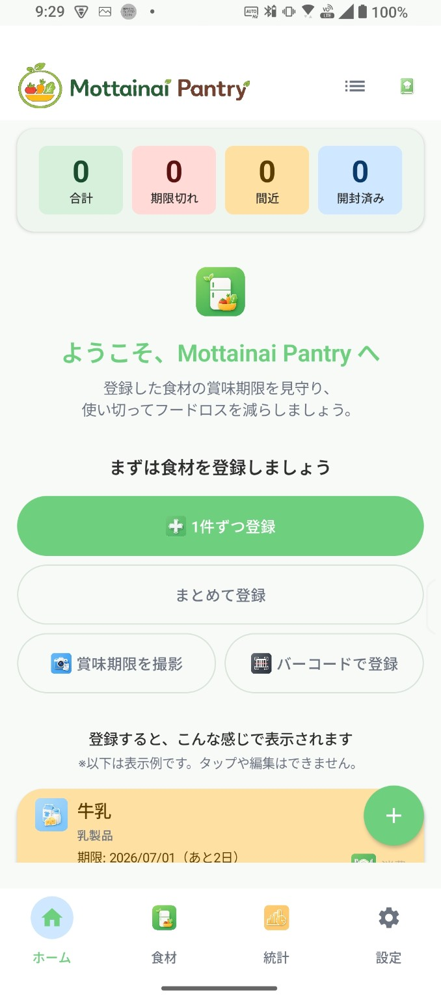

もったいないを、未来の種に。
毎日の小さな気づきが、未来を育てます。
Mottainai Seedsとは
Mottainai Seedsは、生活の中にある「もったいない」を、未来につながる小さな種へ変えていくプロジェクトです。
食品ロス、使い切れないモノ、見過ごされるアイデア。そんな日常の小さな気づきを、アプリの力で少しずつ価値に変えていきます。
第一弾アプリ：Mottainai Pantry
Mottainai Pantryは、家庭の食品ロス削減を支援する食材管理アプリです。賞味期限・消費期限の管理、バーコード登録、OCR、AIレシピ提案、統計機能により、食材を最後までおいしく使い切る習慣づくりをサポートします。

今日からフードロス削減

登録は最短数秒

AIが献立を提案

フードロスを見える化
6人のたねもり
Mottainai Seedsを支える6人のキャラクターたちが、毎日の「もったいない」を見つけ、つなぎ、食べきり、活かし、応援し、未来へ育てます。
モッタくん
リーダー・まとめ役
もったいないに気づき、チームをまとめるリーダー。
ツナグくん
つなぎ役・アイデアマン
アイデアをひらめき、人や考えをつなぐ天才。
タベルンくん
料理担当・食いしん坊
おいしい料理で、食材の魅力を引き出すシェフ。
イカス博士
チェック担当・博士
知識とデータで、安心と安全を守る博士。
ナナエルちゃん
応援担当・ムードメーカー
みんなを元気に応援して、やる気の種をまくリーダー。
イロハちゃん
未来担当・夢みるアーティスト
未来のことを考え、アイデアをカタチにして夢を描くアーティスト。
Coming Seeds
Mottainai Seedsでは、Mottainai Pantryを第一歩として、生活の中のさまざまな「もったいない」を減らすアプリを少しずつ育てていきます。
最新情報
開発状況やアップデート情報は公式Xで発信しています。